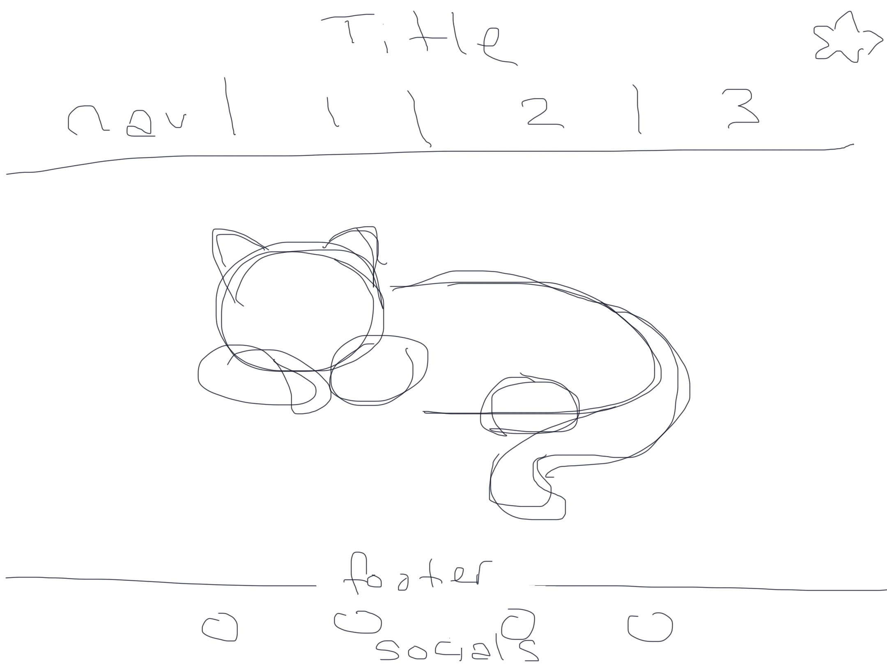

9.16 I am having trouble getting the link to my sketchbook to work properly. I am also not quite sure what I want to include here yet, so I just added a couple quotes and images I like. I'm hoping to make my site feel more like me once we start working on CSS stuff.
9.17 I am having fun experimenting with the styles in CSS. Not everything is working how I want it to yet, for example the navigation in the header and footer are still left aligned instead of centered. However, I think I've made a good start to my website.
9.21 Completing the other coding assignments is helping me learn what works and doesn't. I think a few of my links are still not working, but I am still learning. I think I want my sketchbook to reflect who I am and showcase my favorite things. I think this will be good practice for eventually creating a space for my portfolio.
9.28 Before completing the checkpoint for this week, I decided to fix my organization within my folders. I realized based on the feedback from the first checkpoint that a lot of my files did not have correlating names. After reorganizing, it felt a lot easier to navigate. Then, I decided to continue customizing my site based on the css we learned this week. Although the code is frusterating at times, it is satisfying when it does what I want it to.
10.1 Publishing my site on GitHub created a lot of problems for me. I got a lot of error messages and felt frushterated when I could not figure out what was wrong. I ws originally looking through online site tutorial from GitHub, but then reviewed the class recording. I was able to resolve a few of the issues I had, but my website is still not perfect. So, I am hoping that through offic hours and future classes I will be able to figure out how to fix it.